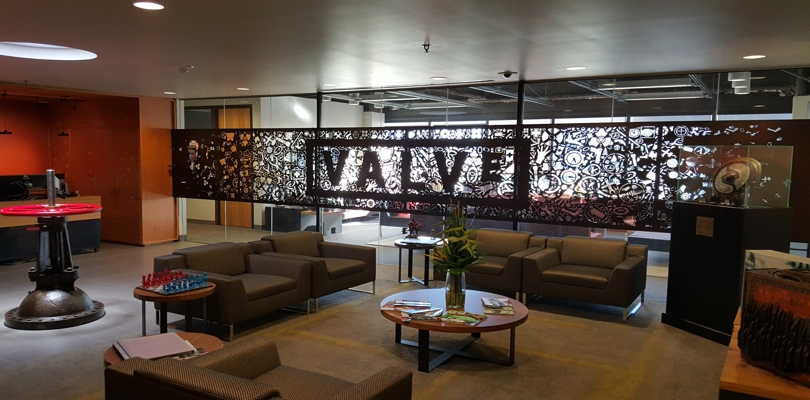
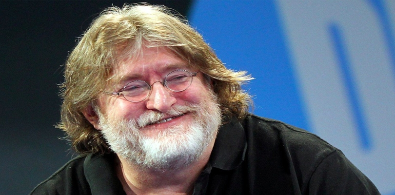
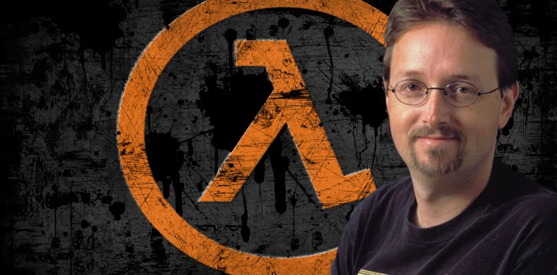
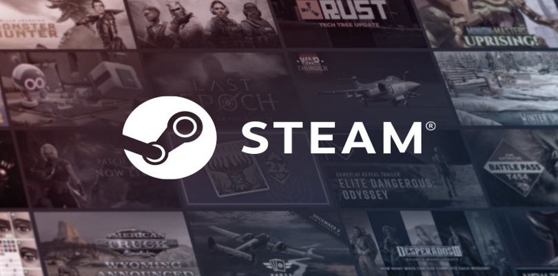
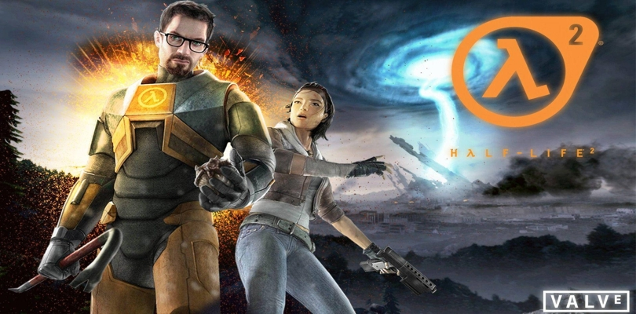

ACERCA DE VALVE

Valve Corporation es una reconocida empresa de desarrollo de videojuegos y tecnología con sede en Bellevue, Washington, Estados Unidos. Fue fundada en 1996 por Gabe Newell y Mike Harrington, dos ex empleados de Microsoft.
Valve se hizo famosa por su primer lanzamiento importante, el videojuego "Half-Life", que fue aclamado por la crítica y se convirtió en un éxito comercial. Desde entonces, Valve ha desarrollado y publicado numerosos títulos populares, incluyendo las secuelas de "Half-Life", como "Half-Life 2" y "Half-Life 2: Episode One" y "Half-Life 2: Episode Two".
Sin embargo, Valve es quizás más conocida por su plataforma de distribución digital de videojuegos llamada "Steam". Lanzada en 2003, Steam se ha convertido en la principal plataforma de distribución digital para juegos en PC, ofreciendo una amplia variedad de juegos de diferentes desarrolladores y editores. También ha proporcionado a los desarrolladores independientes una plataforma para lanzar y vender sus juegos.
Además de sus actividades en el ámbito de los videojuegos, Valve ha incursionado en el desarrollo de hardware, como el controlador Steam Controller y las gafas de realidad virtual Valve Index. También ha trabajado en tecnología de realidad virtual con su software SteamVR.
A lo largo de los años, Valve ha mantenido una reputación de innovación y calidad en la industria de los videojuegos. Su enfoque en permitir que los desarrolladores sean creativos y brindar a los jugadores una experiencia de juego satisfactoria ha contribuido a su éxito y a su gran base de fans en todo el mundo.
GABE NEWELL

Gabe Newell, cuyo nombre completo es Gabe Logan Newell, es un empresario y desarrollador de videojuegos estadounidense. Nació el 3 de noviembre de 1962 en Seattle, Washington.
Newell es cofundador de Valve Corporation, una destacada empresa de desarrollo de videojuegos y tecnología. Antes de fundar Valve en 1996 junto a Mike Harrington, Newell trabajó en Microsoft durante 13 años, donde contribuyó al desarrollo de sistemas operativos como Windows 1.01, 1.02 y 1.03.
Bajo el liderazgo de Gabe Newell, Valve se ha destacado por su enfoque en la innovación y la creación de experiencias de juego excepcionales. Valve ha desarrollado y publicado numerosos títulos populares, incluyendo la serie "Half-Life", "Portal", "Team Fortress", "Left 4 Dead" y "Dota 2".
Además de su trabajo en la industria de los videojuegos, Gabe Newell también ha sido un defensor y pionero en el campo de la realidad virtual. Valve ha lanzado su propia plataforma de realidad virtual llamada SteamVR y ha desarrollado el dispositivo Valve Index.
Gabe Newell es ampliamente reconocido y respetado en la industria de los videojuegos debido a su enfoque en la calidad, la innovación y su filosofía empresarial única. Su liderazgo en Valve ha llevado a la compañía a convertirse en una de las más influyentes en la industria y ha dejado una huella significativa en el mundo de los videojuegos.
MARC LAIDLOW

Marc Laidlaw, cuyo nombre completo es Marc LeBlanc Laidlaw, es un escritor y diseñador de videojuegos estadounidense. Nació el 2 de diciembre de 1960 en Laguna Beach, California.
Laidlaw es reconocido principalmente por su trabajo como escritor en Valve Corporation. Durante su tiempo en Valve, fue una figura clave en el desarrollo de la serie de videojuegos "Half-Life". Fue el escritor principal de "Half-Life" y coescribió tanto "Half-Life 2" como sus episodios posteriores, incluyendo "Half-Life 2: Episode One" y "Half-Life 2: Episode Two". También trabajó en otros proyectos de Valve, como "Portal" y "Left 4 Dead".
Su habilidad para crear historias y desarrollar personajes cautivantes fue ampliamente elogiada por los jugadores y la crítica. Laidlaw contribuyó a la inmersiva narrativa de los juegos de Valve, creando un universo rico y complejo en el que los jugadores se sumergieron.
En agosto de 2017, Laidlaw dejó Valve Corporation después de más de 18 años en la compañía. Desde entonces, ha continuado su carrera como escritor y ha estado trabajando en proyectos independientes.
Marc Laidlaw es considerado una figura influyente en la industria de los videojuegos, reconocido por su talento para contar historias y su contribución al éxito de la serie "Half-Life". Su trabajo ha dejado una marca duradera en la narrativa de los videojuegos y ha dejado una base sólida para que otros escritores y diseñadores de videojuegos se inspiren.
STEAM

Steam es una plataforma de distribución digital de videojuegos desarrollada y gestionada por Valve Corporation. Es una de las plataformas más populares y utilizadas para comprar, descargar y jugar videojuegos en PC.
Lanzada en 2003, Steam ofrece a los jugadores una amplia variedad de juegos de diferentes géneros y desarrolladores, tanto de grandes compañías como de desarrolladores independientes. Los usuarios pueden acceder a la tienda de Steam a través de su aplicación de escritorio o sitio web, donde pueden comprar juegos nuevos, buscar ofertas y acceder a demos y contenido descargable (DLC).
Una vez que se adquiere un juego en Steam, este queda asociado a la cuenta del usuario, lo que permite descargarlo y jugarlo en cualquier dispositivo compatible con Steam. Además, Steam ofrece características sociales, como chat integrado, logros, tablas de clasificación y la posibilidad de conectarse y jugar con amigos.
Otra característica destacada de Steam es su sistema de actualizaciones automáticas, que mantiene los juegos actualizados con los últimos parches y mejoras. También cuenta con una función llamada "Steam Workshop", que permite a los jugadores compartir y descargar contenido creado por la comunidad, como mods, mapas y otros elementos personalizados.
Steam ha sido fundamental para la promoción y el éxito de muchos desarrolladores independientes, brindándoles una plataforma accesible y global para lanzar y vender sus juegos. Además, Valve ha expandido la plataforma más allá de los videojuegos, ofreciendo también software no relacionado con juegos en su tienda.
En resumen, Steam es una plataforma de distribución digital de videojuegos líder en la industria, que ofrece a los jugadores una amplia selección de juegos, características sociales y una experiencia unificada para comprar, descargar y jugar juegos en PC.
RESUMEN DE LA SAGA HALF-LIFE

La saga de Half-Life es una serie de videojuegos de acción y ciencia ficción desarrollada por Valve Corporation. A continuación, te presento un resumen general de la trama de la saga:
Half-Life (1998): El juego original sigue al científico Gordon Freeman, quien trabaja en el Centro de Investigación de Materiales Anómalos (Black Mesa). Durante un experimento, un portal interdimensional se abre y criaturas alienígenas invaden las instalaciones. Gordon debe luchar contra estas criaturas, así como contra las fuerzas militares enviadas para contener el incidente, mientras trata de escapar de Black Mesa y descubrir los misterios detrás de los acontecimientos.
Half-Life 2 (2004): La secuela tiene lugar varios años después de los eventos del primer juego. Gordon Freeman se despierta en una Tierra sometida bajo el control de la Alianza Combine, una fuerza opresiva de seres alienígenas. Un líder rebelde llamado Eli Vance y su hija Alyx lo rescatan y se unen a la lucha contra los Combine. A lo largo del juego, Gordon se enfrenta a criaturas alienígenas, fuerzas militares y al enigmático Dr. Wallace Breen, líder colaboracionista de los Combine.
Half-Life 2: Episode One (2006): Este episodio continúa directamente después de los eventos de Half-Life 2. Gordon y Alyx se encuentran atrapados en la Ciudadela Combine mientras esta se colapsa. Su objetivo es escapar antes de que la explosión resultante cause una catástrofe.
Half-Life 2: Episode Two (2007): El último episodio lanzado hasta la fecha comienza poco después del final de Episode One. Gordon y Alyx deben llevar un importante objeto llamado la Bola de Energía hasta un punto de extracción para su análisis y uso contra los Combine. Durante su viaje, se encuentran con nuevas amenazas y descubren información vital sobre los planes de los Combine.
Es importante tener en cuenta que la saga de Half-Life ha quedado inconclusa, con una historia abierta y sin una conclusión definitiva. Valve ha mencionado en varias ocasiones que están trabajando en futuros proyectos de Half-Life, pero hasta la fecha no ha sido lanzada una secuela oficial o un cierre definitivo de la trama.
Ir a la pagina:
1 2 3 4 5 6 7
volver a:
¿indice?